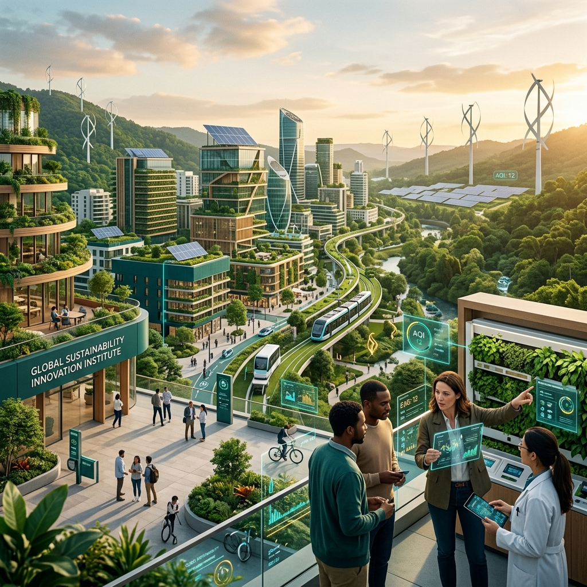

The Institute for Sustainable Technology and Societal Development advances innovative technologies, research, and collaborative solutions that create a more sustainable, resilient, and inclusive society.
Through interdisciplinary efforts, we drive technology solutions and sustainable systems in six target domains.
Clean technologies and solutions for environmental sustainability, carbon reduction, and ecological preservation.
Learn MoreAI-driven platforms for predicting, evaluating, and addressing complex societal, environmental, and institutional issues.
Learn MoreResearch and system designs in clean, decentralized power grids, microgrids, and storage energy systems.
Learn MoreTechnology-enabled architectures and social structures for resilient, accessible, and connected local societies.
Learn MoreDigitized intelligent infrastructure, cloud databases, and data systems for modern institutions and development organizations.
Learn MoreEducational outreach, training seminars, research mentoring, and community technology literacy programs.
Learn MoreWe bridge academic rigor, technology development, and grassroots community needs to design solutions that scale.
Connecting advanced technology, data science, environmental science, and social sciences to address modern systemic challenges.
We measure success through operational field systems, community adoption rates, and clean energy grid connections.
Connecting universities, regional administrations, industry labs, non-profits, and farming cooperatives under one ecosystem.
Deploying IoT sensors, AI models, data pipelines, and blockchain registries to answer tomorrow's climate obstacles.
Our network brings together leading global bodies working towards a shared vision of inclusive, technology-driven development.
We welcome collaboration opportunities with institutions, academic researchers, corporate CSR divisions, and local communities.
Become a Partner